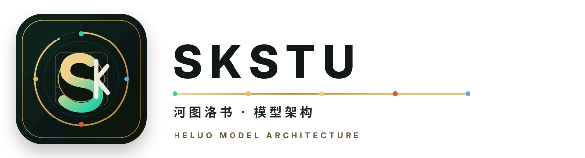
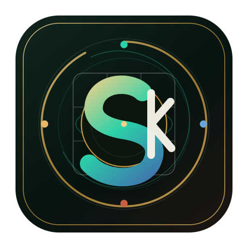
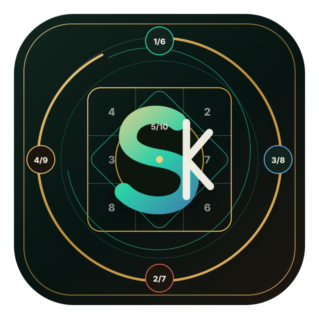

横版锁定
用于官网页眉、README、文档封面和产品介绍。

主标识减负，河洛结构退入底层，S/K 成为第一识别。
新版本拆成展示版、主图标、极简图标和横版锁定。复杂的洛书数字与河图对子保留在展示版里，产品入口优先使用更干净的 S/K 模型流符号，保证小尺寸和深浅背景下都能被快速识别。
用于官网页眉、README、文档封面和产品介绍。
用于应用入口、模型节点、头像和产品导航。

用于 favicon、托盘图标和 32px 以下的小尺寸场景。
用于品牌说明页、大图海报和河洛概念阐释。

青铜、玉色、朱砂、青蓝和纸色分别承载秩序、生成、激发、路径和底层文档气质。